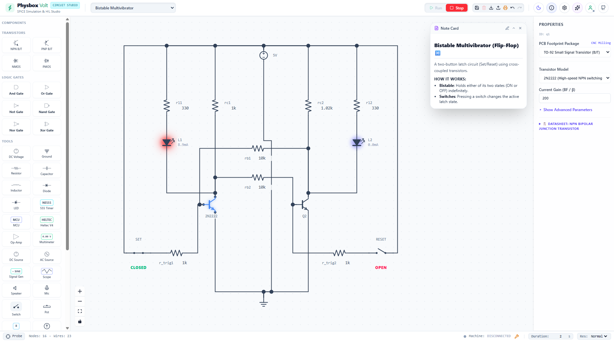
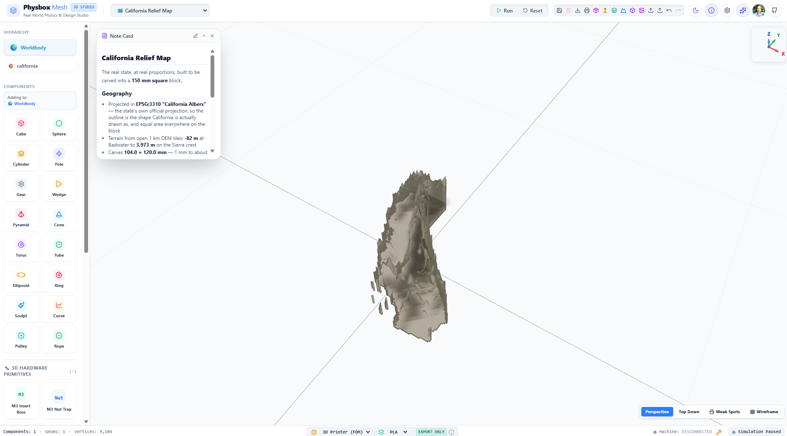

High-fidelity, open-source simulation engines running natively in your browser. From real-time Hardware-In-The-Loop microcontrollers and microsecond electronics to parametric 3D printing, precision laser and CNC vector fabrication, and modeling the consequences of your ideas.
Specialized simulation tools designed to bridge physical mathematics, hardware-in-the-loop silicon, procedural 3D CAD, and precision vector craft.

A full EDA (Electronic Design Automation) environment that runs entirely in the browser — schematic capture, netlist extraction and analog simulation on one canvas — powered by an optimized, custom-compiled Ngspice WebAssembly engine with real-time Hardware-In-The-Loop (HIL) execution. Design, wire, and test complex electrical circuits with true physical waveforms synchronized directly with physical microcontrollers.

Code. Simulate. Print. Powered by AI.
An advanced mechanical simulator powered by a custom-compiled MuJoCo WebAssembly engine
and an integrated WASM OpenSCAD compiler. Generate parametric procedural CAD models, test
physical joint mechanics in real time in a GPU-accelerated WebGL viewport, and export 3D-print ready STL
files.

Vector Artistry. Laser Precision. Machine Control.
A studio for laser cutting, fine surface engraving, and CNC routing. Draw or import vector artwork, vectorize typography automatically, calculate material-specific feeds and kerf compensation, preview 3D G-code toolpaths, and stream directly to GRBL, FluidNC, or grblHAL hardware over WebSerial.
G10 L20, probe Z zero with touch plates, and run 3x3 bed heightmaps so toolpaths follow warped stock or unlevel spoilboards seamlessly.
A hybrid systems simulator engineered to model complex relationships, cellular events, and system cycles. Bridge the gap between deterministic calculus and stochastic environmental cellular grids.
Bridging cognitive reasoning with physically grounded environments. physbox.io provides zero-latency local action spaces where agents can test layouts, solve physical problems, and safely interact with real-world machines.
Large Language Models reason through text and code, but they operate in a physical vacuum. Without realistic feedback, an AI agent cannot correctly optimize an audio amplifier circuit, balance an unstable mechanical linkage, test a physical ESP32 HIL loop, or generate printable 3D CAD parts. They need grounded world models to solve complex, multi-modal tasks.
PhysBox solves this by exposing high-accuracy physical, hardware, and fabrication engines directly to AI agents. It provides a robust, local sandbox where agents can explore bounds, isolate failure points, and solve complex spatial problems.
Built entirely on client-side WebAssembly, our simulators enable AI agents to bridge the gap between abstract reasoning and concrete physical execution. Every engine ships a first-class agent interface over the Model Context Protocol:
physbox-mcp exposes the simulators as 81 typed Model Context Protocol tools over a local WebSocket relay. Agents call physics_build_scene or circuit_run_sim directly.pip install.PhysBox: MCP is a companion server that puts every simulator on the other end of a tool call. Commands travel as JSON over a local WebSocket relay straight into the running browser tab. Seventy-nine are simulator tools; two more — detect_apps and send_command — work across all of them.
pip install physbox-mcpDrop this into .mcp.json for Claude Code, or
~/.gemini/config/mcp_config.json for Gemini in Antigravity.
{
"mcpServers": {
"physbox-mcp": {
"type": "stdio",
"command": "physbox-mcp",
"args": ["--stdio"]
}
}
}Open volt, mesh, etch, or flux.physbox.io and the page registers itself with the relay on load. Nothing else to wire up.
An agent designing a printable or laser-cut part doesn't just emit geometry and hope. It runs the full cycle, and the simulator gives ground truth feedback:
physics_validate_scad
Compile the OpenSCAD source. Returns vertex/face counts and a real-world bounding box — and flags
the classic millimetre-vs-metre slip that silently builds a part 1000× too large.
physics_build_scene
Drop the compiled mesh into a MuJoCo scene with joints, actuators and constraints.
physics_run_headless
Run N ticks and return the trajectory without disturbing the live view. Rollouts for free.
physics_get_telemetry / physics_get_screenshot
Read numbers, or hand a rendered frame to a vision model. Both are one call.
Give your LLM immediate access to a physical world model. Copy any of these prompts directly into your MCP-connected agent:
"Optimize the RC filter values in Volt schematic to achieve a 1 kHz cutoff frequency, then run circuit_run_sim and return the magnitude plot."
"Write an OpenSCAD mounting bracket in Mesh with 4mm screw holes, test structural collision stability in MuJoCo, and export the Z-up STL."
"Import this vector SVG logo, apply 2-pass 3mm stepdown feeds for Plywood, check CNC safety warnings, and generate GRBL G-code."
Why traditional browser tools and desktop CAD/CAM leave AI agents in a physical vacuum—and how PhysBox gives LLMs ground-truth spatial, electronic, and physical feedback loops.
By compiling industry-standard C simulation engines and CAD compilers to WebAssembly, we deliver desktop-grade physics, HIL hardware, and 3D modeling directly in the browser.
Native C simulation cores like Ngspice and MuJoCo compiled directly to WebAssembly for native-level execution speeds and complete browser sandboxing.
High-speed UART (460,800 baud) & WebSocket protocol linking WASM circuit solvers with MicroPython/C++ firmware running on physical ESP32/CYD microcontrollers.
Integrated CSG geometry engine compiling OpenSCAD code to MuJoCo collision meshes in WASM with live parametric UI sliders and 1-click STL export.
Real-time kerf offset calculations, SVG nesting, tab-and-slot finger joints, and WebSerial G-code streaming for laser cutters and CNC machines.
We believe scientific, maker, and educational tools should be accessible to everyone. physbox.io is completely free to use, contains no hidden tiers, requires no account creation, and will remain open-source forever. You can clone the repositories and run them offline locally.